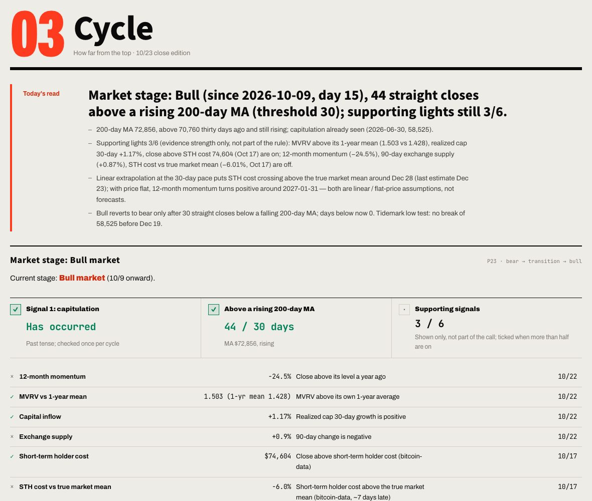
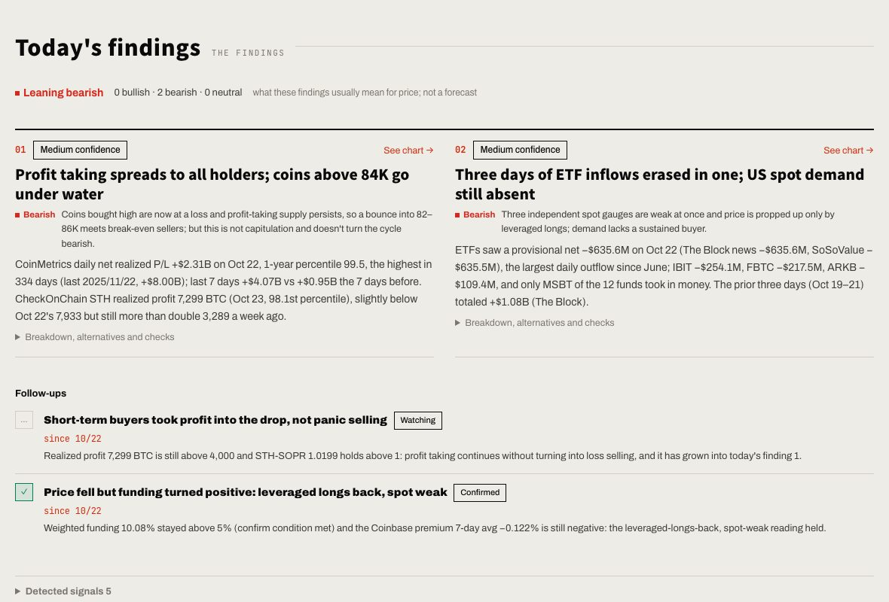
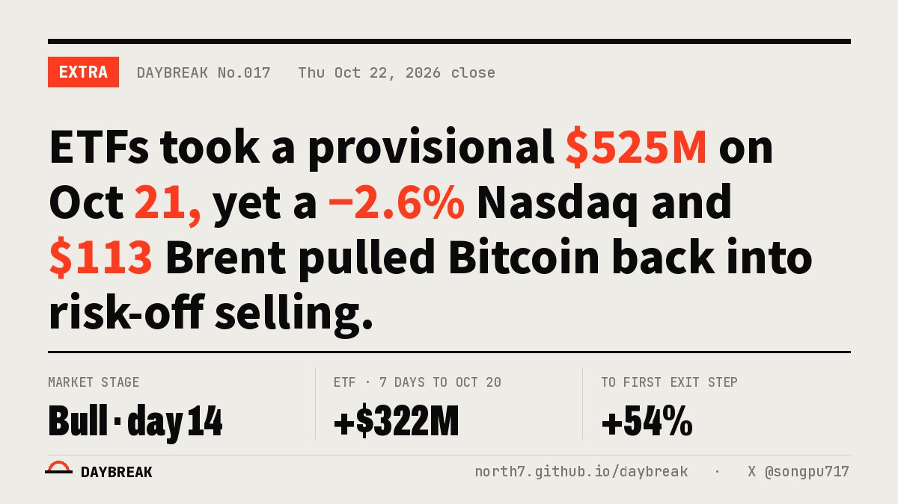
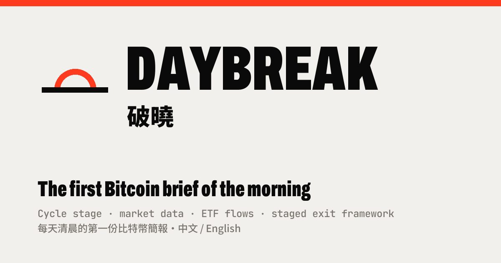
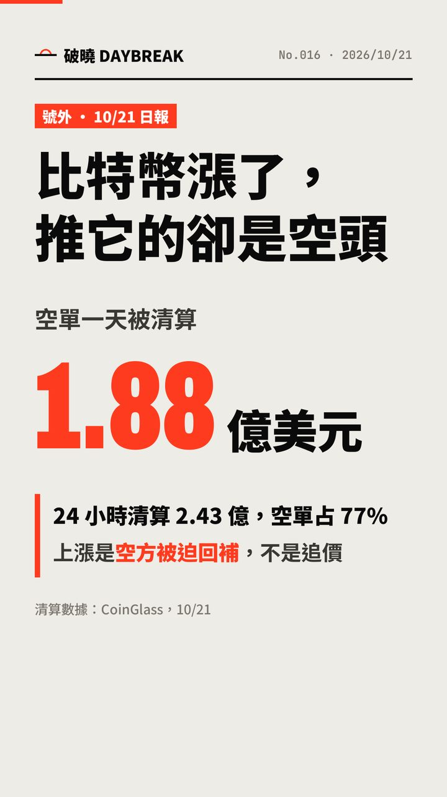

Front page, Oct 23 close edition (No. 018). The headline sums up the market; the closing price is the only heavy visual on the page.
18daily editions in a row since Oct 6
15public data sources, zero API keys
$0data and hosting cost
26series scanned for anomalies every day
9sections in two languages
155commits in the first 16 days of the public repo
TL;DR
At a glance
Problem
Lots of data, few conclusions
Long-term holders want to sell in stages before a cycle top. The on-chain, ETF and derivatives data they need is spread over a dozen sites, none of it says what a number means, and discipline fails exactly when it matters most.
Approach
Separate numbers, reading and rules
Code produces the numbers, AI only explains them, and the exit rules are fixed and reviewed monthly. The brief ships automatically every day, and "Today's findings" points attention at what is unusual, then checks the next day whether the call held.
Outcome
Free to run, on time every day
18 consecutive editions on free APIs only. The one manual step left each day is posting to X. Findings come with testable conditions; the first batch came back the next day as one confirmed and one still being watched.
Problem
Problem and users
The target user holds Bitcoin and plans to sell in stages during this cycle. The first user was me.
ScatteredOn-chain metrics live on Glassnode and CheckOnChain, ETF flows on Farside, derivatives on Deribit and CoinGlass. Every morning meant a round of tabs and lining up dates by hand.
UnexplainedIs an MVRV of 1.5 high or low? What does 10% funding mean? What changed since yesterday? Tools give numbers; the user needs a judgment.
DisciplineAn exit plan written in advance often gets ignored at the top. The hotter the price, the easier it is to find a reason why this time is different.
Free data trapsFree tiers have daily quotas, some series arrive 5 to 7 days late, and sites block automated requests. Professional tools need ongoing subscriptions.
Job to be doneIn a few minutes each morning, know where the market sits in the cycle, whether any exit rule fired today, and which prices and dates to watch next.
In scope
A conclusion-first daily brief
Cycle position and distance to each exit rule
A plain-language reading for every number
Readable on phones, in Chinese and English
Deliberately out
Short-term price calls or trade tips
Anyone's actual holdings or amounts
Order placement or account links
Data that needs keys or payment
Principles
Product principles
These five are written into the README and the daily task's rules. Every trade-off later on traces back to them.
Conclusion first, evidence second
Each section opens with "Today's read": one sentence on what matters most there today. The numbers follow as evidence.
"Not available today" beats a guess
A failed source affects only its own item, and the page says so. Yesterday's number is never carried forward. A status row shows how many days each source lags.
Never subtract across vendors
CoinMetrics and bitcoin-data define MVRV differently. Mixing them produces conclusions that look precise and are wrong.
Every rate comes with its sample size
Historical references always state the sample; under 30, no conclusion. Bitcoin has only 3 or 4 cycles, so every "diminishing returns" claim names its assumption.
Readings never move the rules
Market stage, number readings, news and third-party models are context only. They cannot change the exit framework, whose parameters change only at the monthly review.

The cycle section. Market stage is set by fixed rules (capitulation has occurred, then 30 closes above a rising 200-day average). The six supporting lights are shown but take no part in the call.
How it works
Three layers and the daily run
The most important architectural decision: AI explains. It does not calculate, and it does not decide.
Deterministic code
Numbers
A Python pipeline pulls 15 sources, computes indicators, detects anomalies and archives the previous edition. Same input, same output, every time.
Scheduled Claude task
Reading
Reads a compact brief, verifies news and research, and writes the headline, section reads and findings in both languages. It changes no numbers and no site code.
Fixed parameters
Rules
The exit framework: an 8-step price ladder, on-chain triggers, top acceleration, a 200-day average hedge and a time stop. Changed only at the monthly review.
Taipei time
Who
What
06:40
Actions
Prefetch 7 on-chain series, splitting the free tier's 15 daily requests into two batches.
08:06
Actions
Fetch everything, compute indicators, run anomaly detection, archive the previous edition, publish.
08:30
Claude
Read the brief, verify news and research, write both language editions and the findings; commit only after the format check and privacy scan pass.
08:3x
Actions
Render share images in both languages; push the X post drafts to my phone.
22:00
Actions
Backfill the previous trading day's ETF flows, which the source publishes about a day late.
Decision log
Key decisions and trade-offs
Core design
AI writes the read but never touches the numbers
Context
Letting a model read raw data and write the brief is fast, but numbers can get rewritten, invented or mixed across definitions.
Decision
Only the pipeline produces numbers. The AI reads a 20KB brief, and every figure it cites must exist there. The rules live in one task document, and notes_lint.py checks format, counts, length, no Chinese in the English edition, and at most 4 boilerplate caveats per edition before anything is committed.
Trade-off
Less freedom in the writing, in exchange for auditability: every sentence traces back to a data field. Quality comes from rules and a checker, not daily manual review.
Oct 8 · Oct 15
A zero-cost data strategy
Context
bitcoin-data's free tier allows 15 requests a day, its STH-SOPR ran about 7 days late, and Farside blocks automated requests behind Cloudflare.
Decision
Split requests into 7 the night before and 6 on the day. Read STH-SOPR from CheckOnChain's public chart instead. Switch ETF flows to The Block, adopted only after matching Farside day by day.
Trade-off
More caching and rotation logic. STH-SOPR latency dropped from about 7 days to about 1, and it freed quota, keeping usage at 13 requests a day.
Oct 8 · Oct 21
On time beats clever
Context
GitHub's built-in scheduler ran 5 to 7 hours late on this repo every day. The morning brief was becoming a lunch brief.
Decision
Trigger runs from cron-job.org instead. The original schedule stays as a backup, and duplicate runs on the same day skip themselves. When the AI task finds stale data, it triggers the pipeline itself and waits. On Oct 21 the "already fetched today" check moved from the UTC date to the start of the data cycle.
Trade-off
One more external service to maintain. In return the brief is back to a morning release, with no missed edition in 18 since launch.
Oct 21
Remove a panel rather than show stale data
Context
BitInfoCharts, the source for the whale and large-holder tiers, started blocking automated requests.
Decision
Pause the panel. The pipeline does not error, and the site hides the panel, its status row and its source entry when there is no data. The code stays for a backfill once a replacement source is found.
Trade-off
One popular panel fewer, and the "never carry old numbers" principle intact.
Oct 18
Catching my own backtest error and correcting it publicly
Context
When the net realized profit/loss panel launched, its backtest used the most extreme day of each spike, which is only known in hindsight.
Decision
Re-test using the first day of each spike, which is knowable in real time. The conclusion flipped: loss spikes were followed by ordinary returns, so not a buy signal; profit spikes were often followed by further gains, so not a sell signal. I also added a caveat that every past trigger predates spot ETFs, so the signal may be blunter now.
Trade-off
One attractive "buy signal" gone. Readers get a reading they can trust, and the daily task gained a rule: never write "no trigger" as "no bottom yet".
Oct 8 → Oct 12
Different reading modes for phone and desktop
Context
Nine dense sections. On launch day alone I tried five ways to move between them.
Decision
On phones, one section at a time with left and right swipes, always landing at the top. On desktop, continuous scroll with keys 1 to 9 to jump. CSS and JS carry a version stamp so phones never load a mismatched pair.
Trade-off
Two navigation models to test, so every PR renders each section in both languages on desktop and mobile, failing on JS errors or horizontal scroll.
Oct 12
Default language by region
Context
Most readers arriving from X read English; the core users read Chinese.
Decision
Taiwan, Hong Kong, Macau, mainland China and Singapore default to Chinese; everywhere else defaults to English. A manual choice always sticks. Only the country code is looked up, and the result stays in the visitor's own browser.
Trade-off
One extra third-party lookup, and the AI writes a second edition every day. If the English file is missing, the site falls back to Chinese and says so.
Feature deep dive
Today's findings: from dashboard to judgment
Two weeks in, the pattern was clear: readers can see the numbers themselves. What they can't see is what is unusual, why, and what to watch next.
The first 16 editions gave each section its own paragraph. The coverage was complete, but attention was spread evenly, and the one real anomaly could drown in nine sections. "Today's findings", launched Oct 23, starts from the anomalies, writes a judgment, and makes every judgment testable in the next edition.
STEP 1Detect
Fixed rules over 26 series: 1-year 2% extremes, sharp 7-day moves, state flips, key levels within ±3%, streaks, cross-indicator combos.
signals.py
STEP 2Write 0 to 3
Break down which side moved, cross-check sources, list other explanations, cite past cases with sample sizes.
Claude
STEP 3Set conditions
For example "realized profit back below 4,000 BTC", with a deadline and whether it would confirm or refute.
Claude
STEP 4Check next day
The pipeline reads the previous conditions and tests them against today's numbers.
signals.py
STEP 5Follow up
Confirmed, refuted, expired or still watching. Outcomes go into the archive index.
Claude
↺ Step 5 feeds step 1 of the next edition

Findings in the Oct 23 edition. Of the previous two, one is confirmed (funding stayed above 5%) and one is still being watched. Each carries a bullish, bearish or neutral tag with its reason, rolled up into an overall lean at the top.
Design rule
A forced finding is worse than none
At most three, and zero is allowed. Several signals about one event merge into one finding. A multi-day anomaly is only written up again when something new happens; otherwise it goes to follow-ups.
Why this design
Make the AI's judgment scoreable
Every finding states what would prove it wrong, and the system grades it automatically the next day. Over time that yields a confirmation rate, a direct measure of reading quality.
Iterations
Timeline
Data pipeline and site
First, a correct set of numbers every day. Interpretation came later.
Supply flows and order-book depth
Order books grew from 3 to 13 exchanges (Oct 6), plus a third-party top and bottom model shown as a reading.
Public launch
Request rotation, a new ETF source, swipe navigation on phones, asset version stamps.
Market stage rules revised
A bull call now needs capitulation first, then 30 closes above a rising 200-day average; supporting lights added.
A reading for every number; English edition
Fixed thresholds generate "what this means now", tagged bullish, bearish, caution or neutral. Automated PR checks go live.
Distribution
Share images in both languages, daily X drafts, a posting helper, cookie-free analytics.
A "how to read" note under every chart
"Now" is generated from the day's data; "how to read" says what to be careful about. Dashed lines always mean projection. Eleven on-chain metrics gain 3-year history.
Net realized P/L and a backtest correction
Found hindsight bias, re-tested in real time, published the reversed conclusion.
From one paragraph per section to anomalies first, with judgments that can be tested.
Distribution
Distribution and growth
The content is generated daily, so distribution had to be nearly free too: images render themselves, drafts write themselves, and I only press send.

Share image, rendered by Actions after each edition is pushed.

Link preview card shown when the URL is posted on X; English by default.

Short-video cover (Chinese edition). Social content carries market information only, never the exit framework.
Automation
A draft every day
After the brief, the AI writes an X post in each language, x_len.py confirms both fit in 280 characters, and the drafts arrive as a phone notification. A posting helper copies the text, saves the image and opens the X composer.
Boundary
Information is public; strategy stays on site
Shorts and posts leave out the exit framework, trigger counts and action calls like "no action today". Social brings people in; the framework is explained in full on the site.
Measurement
Analytics without personal data
GoatCounter uses no cookies and counts only on the production URL. Links from X carry utm_source=x, so social traffic is separable.
Trust & quality
Quality and risk
Risk
Control
Personal data leaks via the public repo
Privacy is the top rule: no one's actual holdings or amounts, ever; the exit framework is expressed in percentages only; every commit is scanned first.
AI invents or misstates numbers
It reads the brief only and changes no numbers; a checker enforces format and counts, and nothing is committed until it passes.
Readings mistaken for trade signals
Tags describe only what a number usually means for price; when the AI's read disagrees with the automatic reading, it must say why.
Late or failed data
A status row lists each source's date and lag; failed items show "not available today".
A redesign breaks the site
Every PR checks syntax, the English dictionary and version stamps, and renders every section in both languages on desktop and mobile.
Metrics & next
Success metrics and next steps
The product has been live for about two weeks. Analytics are in place but the sample is still small, so here are the metrics I will use to judge it.
Metric
Definition
Status
North star
Returning readers who open the brief each day
Instrumented, collecting
On-time rate
Share of days with data and reading updated by 08:30
18 consecutive editions
Data completeness
Items marked "not available today" per edition
Shown daily in the status row
Reading quality
Confirmed versus refuted findings at expiry
Tracking since Oct 22; first batch 1 confirmed, 1 watching
Distribution
Share of visits tagged utm_source=x
Instrumented, collecting
Next
Back-issue pages
Every edition already archives its headline, close, later move and whether watched levels were hit. On Oct 12 I chose to archive only, and design a browsable page once there is enough history.
Next
A public scoreboard for findings
Put the confirmation rate on the site and let readers decide how much to trust the brief.
Next
A replacement whale source
Find address-tier data that allows automated access, then bring back the paused panel.
Learnings
What I learned
With AI in the product, the spec is the rules document
The daily task's instructions run past 160 lines, covering format, counts, prohibitions and how each section should be written. When a quality problem shows up, I fix the rule and the checker, not that day's paragraph, so the same mistake does not come back.
Trust is cumulative
"Not available today", sample sizes, dashed projections, a public backtest correction: each one makes the product look less impressive on its own. Together they are why readers believe the rest of the numbers.
Ship daily first, get smart second
Most of the first two weeks went into sources, schedules and quotas. Only once the brief was reliably on time and correct did a judgment-heavy feature like findings make sense.